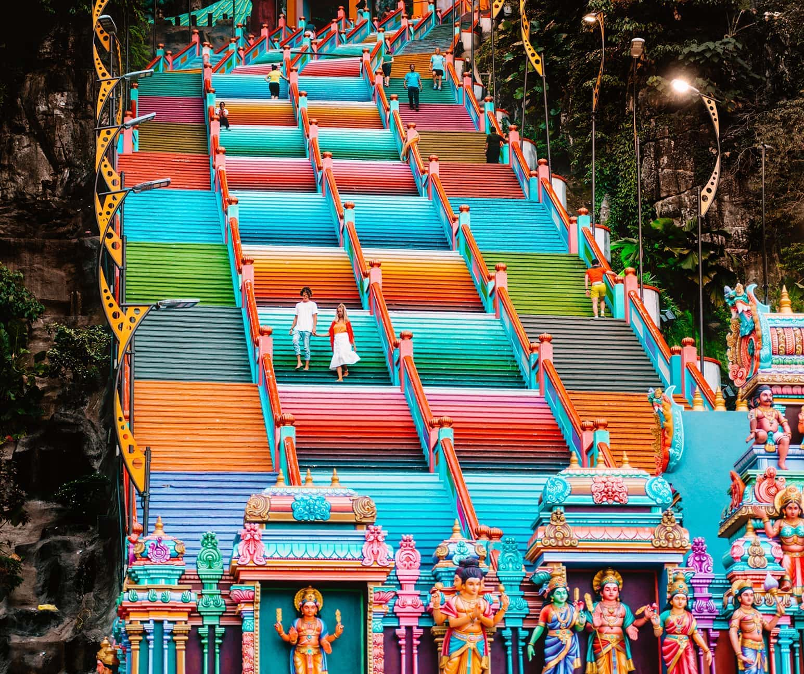
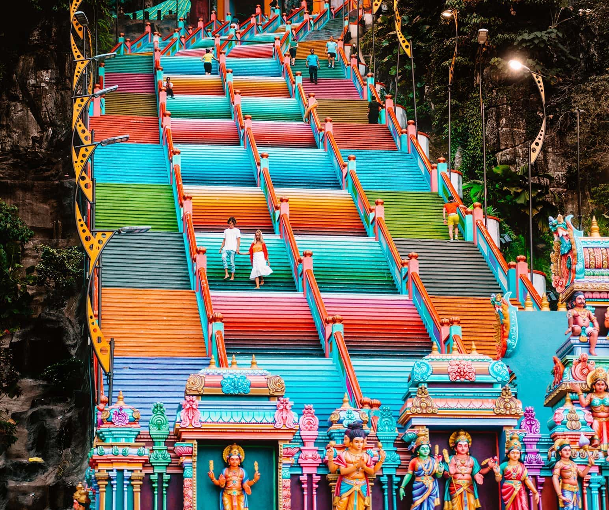

Malaysia (UK: /məˈleɪziə/ ⓘ mə-LAY-zee-ə; US: /məˈleɪʒə/ mə-LAY-zhə; Malay: [malɛjsia] ⓘ) is a country in Southeast Asia. The federal constitutional monarchy consists of 13 states and three federal territories, separated by the South China Sea into two regions: Peninsular Malaysia and Borneo's East Malaysia. Peninsular Malaysia shares a land and maritime border with Thailand and maritime borders with Singapore, Vietnam, and Indonesia. East shares land and maritime borders with Brunei and Indonesia, as well as a maritime border with the Philippines and . Kuala Lumpur is the national capital, the country's largest city, and the seat of the legislative branch of the federal government. Putrajaya is the administrative centre, which represents the seat of both the executive branch (the Cabinet, federal ministries, and federal agencies) and the judicial branch of the federal government. With a population of over 33 million, the country is the world's 43rd-most populous country.
The country is one of 17 megadiverse countries, and it is home to numerous endemic species. Tanjung piai is the southernmost point of continental Eurasia. The country is located in the tropical region of Earth.
Ini perenggan baru.
Dalam perenggan ini saya enter
Saya enter lagi dalam perenggan ini
 
© 2023 , The Moose Academy ™ < br/>